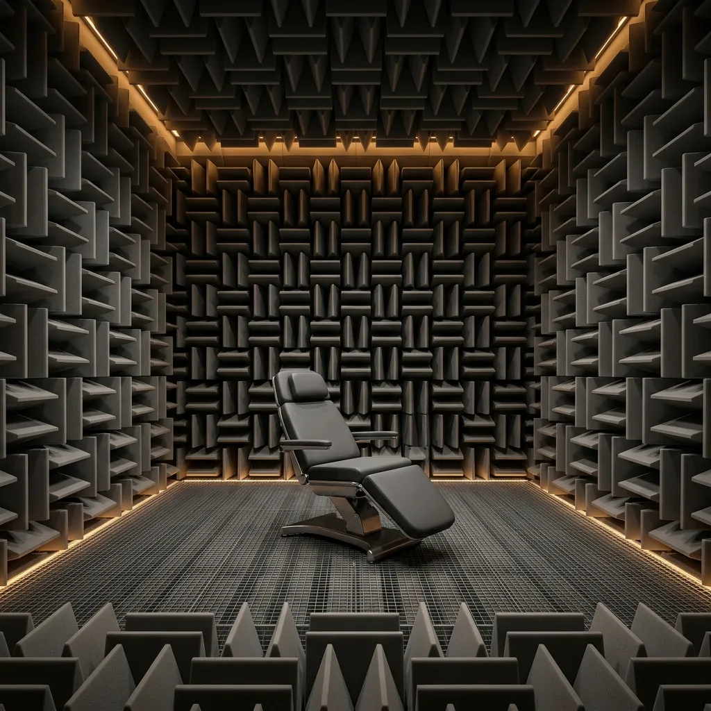

The primary acoustic defense of the B-7 Anechoic Monolith relies on its uncompromising physical weight. The exterior shell is cast from 300mm thick high-density barium concrete, a specialized formulation vastly superior to standard construction materials in its ability to block low-hertz mechanical rumbling. This extreme mass specifically targets the deep, penetrative vibrations generated by heavy stamping presses and heavy metal fabrication lines—frequencies that easily breach conventional partitioned walls. By presenting an impenetrable monolithic barrier, the outer shell ensures that the majority of kinetic and acoustic energy is reflected away before it can enter the patient isolation zone. This brutalist massing strategy guarantees absolute structural rigidity and forms the critical foundation for the internal clinical environment.
The B-7 Anechoic Monolith.
Mass, isolation, and metamaterial physics.
Overcoming catastrophic industrial noise requires uncompromising structural engineering. We reject lightweight acoustic panels in favour of sheer physical mass and complete environmental decoupling. The B-7 utilizes extreme density, pneumatic suspension, and geometric metamaterial attenuation to entirely defeat low-frequency resonance. By combining immense concrete volume with calibrated acoustic isolation, we create an absolute sensory void capable of withstanding the most extreme manufacturing environments.
High-Density Concrete Massing
Internal Anechoic Metamaterials
While the exterior concrete shell repels external low-frequency waves, the internal surfaces are engineered to eliminate every trace of acoustic reflection. The vault is meticulously lined with complex geometric melamine foam wedges and deep-frequency bass traps, arranged in a precisely calculated asymmetric array. This metamaterial configuration absorbs incidental soundwaves, preventing any echo or reverberation within the chamber. The resulting acoustic dead zone achieves a staggering -10 dBA internal environment, a level of absolute silence where patients can clearly hear the rhythmic beating of their own heart. This profound auditory deprivation is central to the intervention, instantly halting the brain's ambient threat detection protocols and forcing the sympathetic nervous system into a state of immediate, deep restorative calm.

Pneumatic Floor Decoupling
Sound in an industrial environment is transmitted not only through the air, but aggressively through the substrate. To counter this, the internal patient chamber of the B-7 is entirely physically detached from the exterior concrete shell. It floats upon four heavy-duty pneumatic isolators, a suspension mechanism adapted from precision metrology laboratories. These isolators absorb and dissipate seismic tremors and heavy machinery impacts travelling through the factory floor. This ensures that no tactile vibration transfers into the patient's skeletal structure while they occupy the central medical chair. By comprehensively decoupling the interior void from the chaotic external environment, we guarantee a pure, uninterrupted state of neurological stabilization, completely immune to the kinetic violence of the surrounding industrial operations.
Labyrinthine Air Exchange
Providing a sealed acoustic vault presents a critical physiological challenge: delivering continuous fresh oxygenation without breaching the sound barrier. Conventional ventilation systems act as acoustic conduits, transmitting factory noise directly into enclosed spaces. The B-7 resolves this via a massive, S-curved acoustic labyrinth integrated into the rear concrete bulkheads. As fresh air is cycled into the chamber, it travels through a prolonged, heavily baffled channel lined with dense sound-deadening foam. This torturous path effectively strips away every decibel of external auditory interference while maintaining a steady, silent airflow. The exhaust undergoes the identical labyrinthine process, ensuring the patient remains safely oxygenated while the absolute integrity of the zero-decibel clinical void is strictly maintained throughout the intervention.